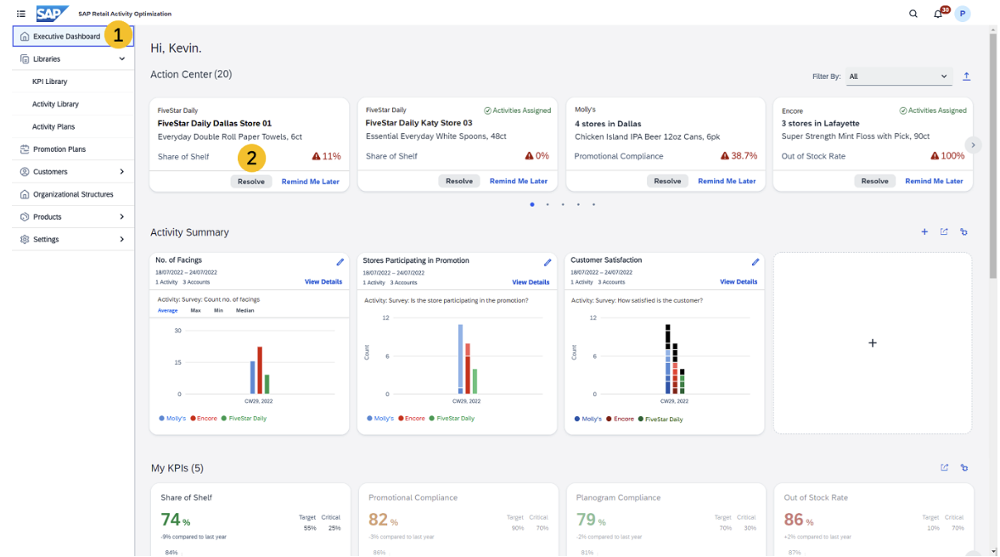

I worked as a software developer in SAP from March, 2021 to August, 2022 building a SaaS called Retail Activity Optimization. It is a solution for optimizing the execution of retail activities, which allows manufacturers of consumer products to allocate retail activities with insight-driven activity planning, analyzes retail performance by KPI to maximize the impact of each store visit.
My main focus is on the Executive Dashboard - a place where user can view and resolve issues with the in-store retail performance, create widgets to view the summary data of retail activities, and view retail performance KPIs.
This is my first full-time work experience in a large tech team. I learned a huge amount of things - not only software development skills and stacks but product roadmap design and management as well. I realized that to make a great product we need to first have a good sense of product in a global view before start implementing it. Otherwise it would be highly likely that we are forced to go back to the original and restart it at some point. It is also commonly seen that in the industry that the design of feature and its UI keep changing and developers need to change their implementation iteratively. But always keeping in mind the global view of your product could prevent you from lost in the iterative development process!